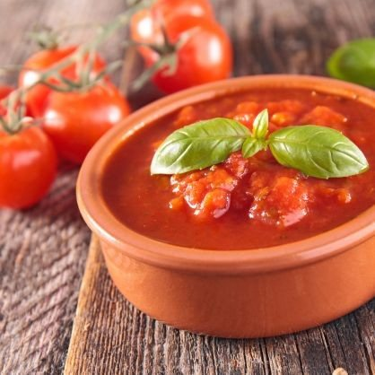

Massas
Molho de tomate

Ingredientes
- 1 ½ kg de tomates maduros
- ¼ xícara de azeite de oliva
- 3 dentes de alho amassados
- Sal e pimenta-do-reino a gosto
- Folhas de manjericão
Modo de preparo
- Leve uma panela grande com bastante água ao fogo e deixe ferver. Jogue os tomates e deixe na água quente por 5 minutos. Escorra, retire a pele e corte em quatro.
- Numa outra panela, aqueça o azeite e junte o alho. Refogue por 1 minuto, até o molho começar a dourar.
- Acrescente os tomates, abaixe o fogo e tampe a panela. Deixe cozinhar por 30 minutos. Retire do fogo e deixe esfriar um pouco.
- Bata os tomates no liquidificador, sem deixar moer demais.
- Leve os tomates moídos de volta à panela e tempere com sal e pimenta a gosto. Cozinhe com a panela destampada por 10 a 15 minutos.
- Acrescente folhas de manjericão e cozinhe por 1 a 3 minutos. Passe para uma tigela, deixe esfriar e congele.
Observação
Se preferir um molho de tomate mais espesso, acrescente 1 ou 2 colheres (sopa) de extrato de tomate na última etapa do cozimento. Estoque: você pode triplicar a receita e congelar em 3 porções para usar depois em lasanha, molho de carne, peixes etc. Congelamento: coloque o molho num saco plástico que feche hermeticamente, ou em potes de polietileno; etiquete e leve ao freezer. Descongelamento: na geladeira de um dia para o outro, ou no micro-ondas, ou numa panela em fogo brando, em banho-maria.